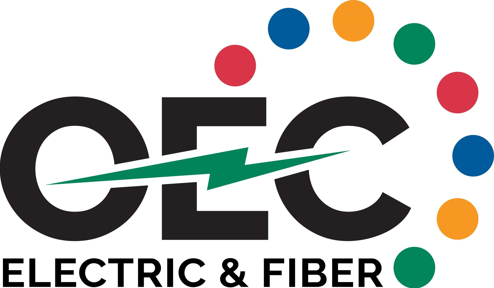

Software
Simulation & analysis tools
The laboratory has a suite of power system simulation and analysis tools. The lab SCADA system uses a combination of Schweitzer Engineering Laboratories, Siemens and Wago real-time automation software.
Support & Acknowledgement
The Moses Lab gratefully acknowledges the sponsors and partners whose financial and equipment support makes our research possible.
